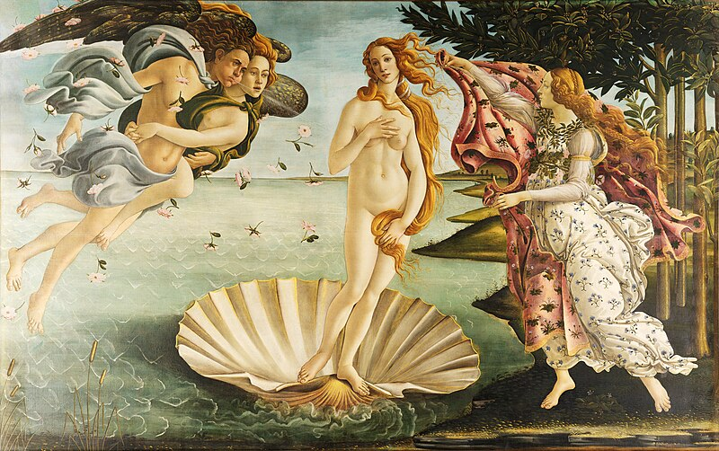

Дві
таблиці| Мона Ліза | Зоряна ніч | Крик | Народження Венери |
|---|---|---|---|
 |
 |
 |
 |
| Деталі картини "Мона Ліза" | Деталі картини "Зоряна ніч" | Деталі картини "Крик" | Деталі картини "Народження Венери" |
| Мона Ліза, написана Леонардо да Вінчі, вважається одним з найвідоміших творів мистецтва у світі. | Зоряна ніч - одна з найвідоміших картин Вінсента ван Гога, створена в 1889 році. | Крик - шедевр норвезького художника Едварда Мунка, створений у 1893 році. | Народження Венери - відома картина Сандро Боттічеллі, створена близько 1486 року. |
| Картинна Галерея | |||
|---|---|---|---|
| Назва картини | Художник | Рік створення | |
| Ім'я | Прізвище | ||
| Моно Ліза | Леонардо | да Вінчі | 1503 |
| Вінсент | Ван Гог | 1889 | |
| Герцогиня Аргіля | |||
| Джоан | Міро | 1927 | |
| Дівчина з перлиною | Ян | Вермеєр | 1665 |
| Автопортрет з кучерявим волоссям | Фріда | Кало | 1940 |